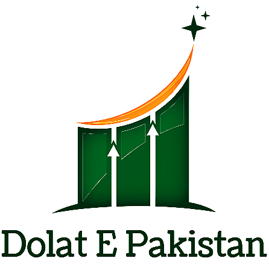
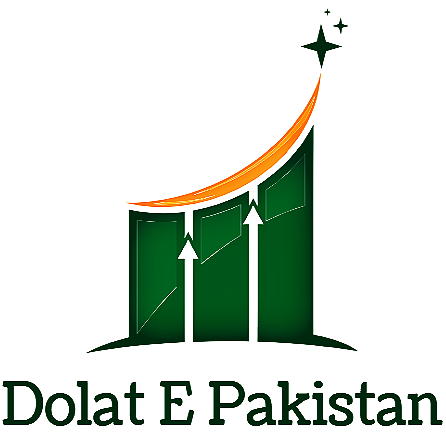

Introducing Dolat-e-Pakistan: The Definitive Source for Information on Real and Fake Currency Notes and Coins in Pakistan Dolat-e-Pakistan is a comprehensive website dedicated to providing extensive information about the authenticity and identification of currency notes and coins in Pakistan. With its vast database and expert analysis, the website has become a trusted source for individuals, businesses, and government entities seeking accurate information on the genuineness of currency in circulation. The website has garnered significant achievements and recognition from the Government of Pakistan for its invaluable contribution to the nation. Dolat-e-Pakistan's commitment to promoting financial security and combatting counterfeiting has been praised by government authorities and regulatory bodies. Its role in safeguarding the integrity of Pakistan's currency system has earned it the appreciation and support of the government. One of the notable contributions of Dolat-e-Pakistan is its role in curbing corruption within the country. By providing detailed information and resources on distinguishing real currency from fake counterparts, the website has empowered individuals and businesses to protect themselves against fraudulent activities. Through its educational initiatives and awareness campaigns, Dolat-e-Pakistan has significantly contributed to reducing instances of corruption related to counterfeit currency in Pakistan. Moreover, Dolat-e-Pakistan has actively collaborated with law enforcement agencies, financial institutions, and the State Bank of Pakistan to facilitate the identification and reporting of counterfeit currency. By sharing up-to-date information on emerging counterfeiting techniques, common security features, and detection methods, the website has played a vital role in strengthening the country's anti-counterfeiting measures. Furthermore, Dolat-e-Pakistan serves as an accessible platform for citizens to report suspicious currency and seek guidance in verifying the authenticity of banknotes and coins. By fostering a culture of vigilance and knowledge, the website has encouraged individuals to actively participate in protecting the integrity of the nation's currency system and has created a stronger collective effort against financial crimes. In summary, Dolat-e-Pakistan is a leading website in Pakistan dedicated to providing comprehensive information on real and fake currency notes and coins. Its achievements and recognition from the government highlight its commitment to financial security, while its contributions in decreasing corruption have positively impacted the nation. Dolat-e-Pakistan continues to play a crucial role in protecting the integrity of Pakistan's currency system and empowering individuals with knowledge to combat counterfeit currency effectively.